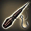
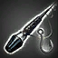
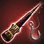
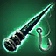
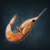
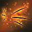
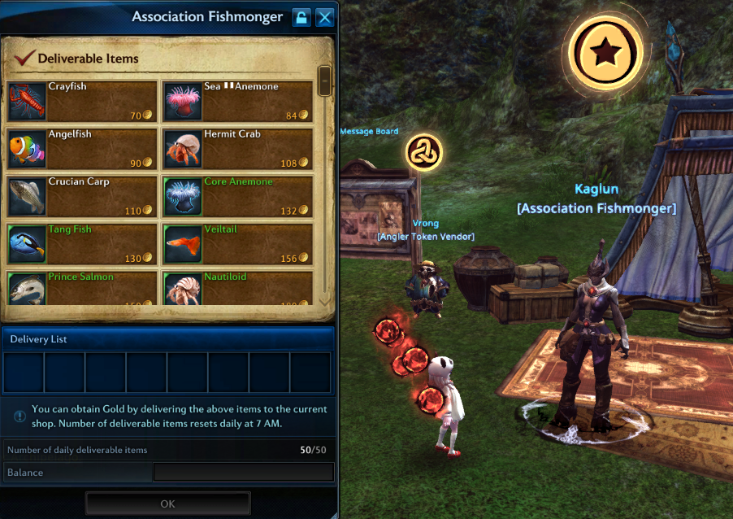
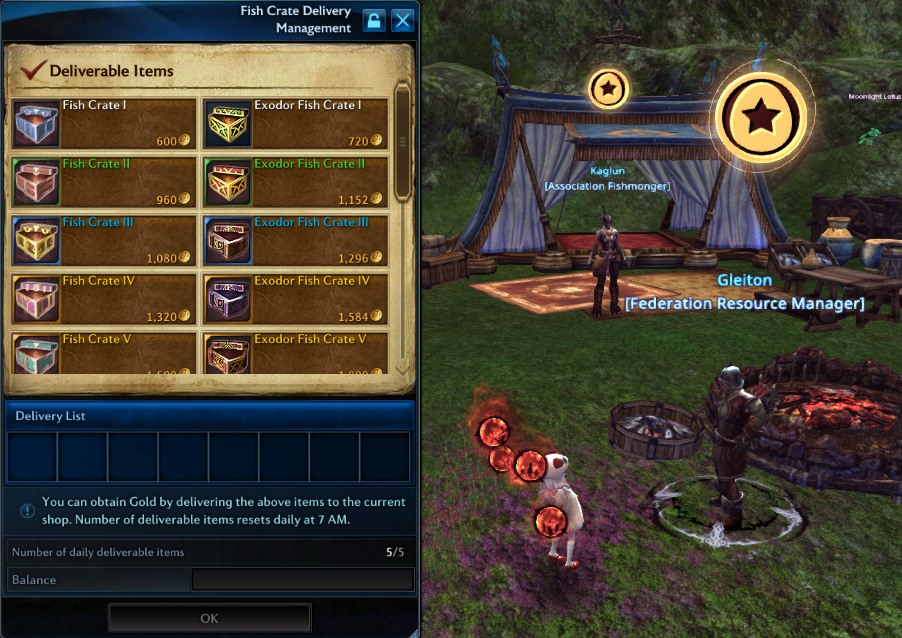
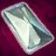

Tenacity / Activities / Fishing
Fishing is a casual open world activity. In order to catch fish, Bait and Fishing Rod are necessary. Both can be purchased with Gold from a [Fishing Supplies] merchant, and higher grade Fishing Rods and Baits can be exchanged with Angler Tokens from an [Angler Token Vendor].
[Fishing Supplies] merchant and [Angler Token Vendor] are located at fisheries and major cities.
Fish caught can be delivered to select NPCs for Gold or goods, or can be dismantled to obtain Fish Filet (Arborean Fish) or Kirash Filet (Exodor Fish) which can be used as Cooking materials.
Fish caught cannot be traded and fishing does not impact PvE or PvP.
Basics
With Bait and Fishing Rod in hand, players can head over to a fishery to start fishing. Before casting a fishing line with the Fishing Rod, Bait must be toggled on.
This can be done through Inventory, players can right-click toggle to activate a bait - appropriate effect icon indicates that the bait is active. Once toggled on, players can right-click the Fishing Rod to cast a line. Fishing Rod can be right-click held to cast the line farther away.
● Both Bait and Fishing Rod can be registered to a skill slot.
When a fish bites, players can press the interact key (default : F) to manually catch the fish, or wait a few minutes for the system to automatically catch the fish for you. Manual fishing is a lot quicker but requires more effort as difficulty increases with the grade of the fish.
Manual fishing
In order to catch fish manually, players must play a mini-game. The key objective of the mini-game is to move the square on the left towards the reel on the right by reeling the fish appropriately within a time limit.
Fish can be pulled to the right by holding the interact key (default : F) and Fish must overlap with the square in order to move it.
Difficulty of the mini-game increases relative to the grade of the fish to be caught - the square to shift to the right decreases in width, and the fish to be caught can resist more strongly and more often.
Difficulty can be decreased using Fish Salad.
After manual fishing, the system does not recast the fishing line for the player.
Automatic fishing
Instead of pressing the interact key (default : F) to manually fish, fishing can be automated when left idle for 3 minutes of auto-fishing time. After waiting and the fish is automatically caught, and the system recasts a fishing line.
Players can switch to manual fishing at any point during the auto-fishing time.
Automatic fishing will continue until players runs out of bait or inventory is full.
Auto-fishing time can be reduced by using Fairywing Rod, or equipping Angler뭩 Whiskers and Card effects from Card Collection.
Generally auto-fishing cannot catch BAF natively, and requires a Companion with BAF Auto-Fishing ability to be summoned.
Big-Ass Fish
Rare fish called BAF, short for Big-Ass Fish have a rare chance to bite. BAF can be delivered to a Fish Associated Fishmonger NPC for at least 500 Gold.
There are several things that can increase the chance to catch a BAF :
Premium bait such as Popori Bait or Rainbow Bait (item)
Ash Sapling Rod (item)
Clover's Luck (item)
Backup Fisherman Gifted Skill (Companion)
Fishing Rod
The most basic Old Fishing Rod can be purchased from a [Fishing Supplies] merchant with Gold, while other higher grade Fishing Rods must be exchanged with Angler Tokens from an Angler Token Vendor and be upgraded.
Other than the Old Fishing Rod, there are 3 different types of Fishing Rods : Xermetal, Ash Sapling, Fairywing Rod.
These Fishing Rods have special effects that affect fishing and can be upgraded up to tier VIII.
|  | --- |
|  | Increase the chance to catch a high-grade fish, decrease wait time |
|  | Increase the chance to catch a Big-Ass Fish |
|  | Decrease auto-fishing waiting time |
Bait
Bait I can be purchased from a [Fishing Supplies] merchant with Gold.
Bait II-V can only be crafted through the Processing profession.
Bait I~V and Angleworm I-V cannot be used at Exodor fisheries
|  | Pilidium Bait can be used exclusively at Exodor fisheries, and can be purchased from a Exodor Justicar Reputation Merchant for 1 credit or exchanged from a Angler Token Vendor for 10 Angler Tokens each. Players are limited to 60 Pilidium Bait to hold in Inventory. |
Premium bait such as Popori Bait, Rainbow Bait, etc. can be used at both Arborean fisheries and Exodor fisheries.
Bait : Angleworm
Angleworm bait have an additional effect which decreases wait time.
Angleworm I-V can be exchanged from a Angler Token Vendor for Angler Token.
Angleworm II-V can also be crafted through the Processing profession as crit reward.
Angler뭩 Whiskers
|  | Angler뭩 Whiskers is an Armor: Mask slot item to help decrease waiting time on fish bite and auto-fishing time. It can be upgraded to tier X, however requires multiple Angler뭩 Whiskers, lots of Pulsating Essences, and good RNG. Angler뭩 Whiskers can be crafted through the Processing profession. |
| Tier | Whisker material | Pulsating Essence | Gold | Success chance |
|---|---|---|---|---|
| II | Tier I | 2 | 1.000 | 100% |
| III | Tier II | 4 | 2.000 | 95% |
| IV | Tier III | 6 | 3.000 | 90% |
| V | Tier IV | 8 | 4.000 | 85% |
| VI | Tier V | 10 | 5.000 | 80% |
| VII | Tier VI | 14 | 7.000 | 75% |
| VIII | Tier VI | 20 | 10.000 | 70% |
| IX | Tier VIII | 30 | 15.000 | 65% |
| X | Tier IX | 40 | 20.000 | 60% |
| Total without fail | - | 134 | 67.000 | - |
Delivery
Fish and select related items can be delivered to NPCs for Gold or goods. A limited number of select Fish and select related items can be delivered, and limit resets daily.
Delivery:Fish
Fish can be delivered to a Fish Associated Fishmonger NPC for Gold or goods. List of deliverable fish changes daily, and delivery is limited 50 fish per day.

Delivery:Fish Crate
Fish Crates are crafted items that can be delivered to a Federation Resource Manager NPC for Gold or goods. Said item can be crafted through the Smelting profession.
Designs for Fish Crates can be exchanged from an Angler Token Vendor for Angler Tokens. Designs for Exodor Fish Crates specifically can be purchased from NPC on Exodor fisheries.

Angler Token
|  | Angler Token is used to purchase goods from an Angler Token Vendor, and upgrade Fishing Rods to the next tier. Angler Tokens can be obtained from Fishing, and the grade of the Fish caught determines the amount of Angler Tokens obtained. Angler Tokens are exclusively obtained from Fish caught on Arborean fisheries, and Fish caught on Exodor Archipelago do not reward Angler Tokens. |
| Fish grade | Amount |
|---|---|
| 0 | 1 |
Fishery
Fishing is possible in select locations. There are 6 fishing locations on Arborea, and 9 fishing locations on Exodor which you can visit after completing [Important] The Way to Exodor quest.
| Arborea | Exodor |
|---|---|
| Muricai Fishery - Arcadia | Faerie Pond Fishery - Rogash's Garden |
| Cutthroat Harbor Fishery - Ostgarath | Garden Bridge Fishery - Rogash's Garden |
| Vexatus Swamp Fishery - Ostgarath | Azart Fish Farm - Rogash's Garden |
| Lake of Tears Fishery - Poporia | Cloudlake Island - Iridian Wetlands |
| Seren's Lake Fishery - Veritas District | Verrak Fountain Fishery - Verrak Fortress |
| Celsian Lake Fishery - Westonia | Iridian Fishery - Iridian Wetlands |
| - | Exodor Farmlands (hidden fishery) - Exodor Farmlands |
| - | Dazzling Garden (hidden fishery) - Iridian Wetlands |
| - | Predator Territory (hidden fishery) - Iridian Wetlands |
Players can directly teleport to Arborean fisheries by using Fishery Teleport Scrolls sold by [Fishing Supplies] merchant, or through Fishing Association Executive Waining in Highwatch.
For Exodor fisheries, players can fly to a fishery island, and then purchase Fishery Teleport Scrolls from [Fishing Supplies] NPC on Exodor fisheries.
In v103, [Daily] Gathering at Exodor Fishery Vanguard Request is added. This Vanguard Request allows players to teleport to Azart Fish Farm on Exodor, making it easy to reach an Exodor fishery.
| Grade | Muricai Fishery | Cutthroat Harbor Fishery | Vexatus Swamp Fishery | Lake of Tears Fishery | Celsian Lake Fishery | Seren's Lake Fishery |
|---|---|---|---|---|---|---|
| 0 | Stone Moroko | Azurecheek Carp | Azurecheek Carp | Stone Moroko | Stone Moroko | Azurecheek Carp |
| 1 | Crayfish | Clownfish | Clownfish | Crayfish | Crayfish | Clownfish |
| 2 | Angelfish | Black-fin Clownfish | Black-fin Clownfish | Angelfish | Angelfish | Black-fin Clownfish |
| 3 | Squid | Squid | Crucian Carp | Crucian Carp | Crucian Carp | Squid |
| 4 | Sea Eel | Sea Eel | Sea Eel | Freshwater Eel | Sea Eel | Freshwater Eel |
| 5 | Octopus | Marlin | Marlin | Prince Salmon | Prince Salmon | Octopus |
| 6 | Eldritch Carp | Mottled Ray | Catfish | Channel Catfish | Mottled Ray | Eldritch Carp |
| 7 | Chroma Salmon | Gula Shark | Chroma Salmon | Electric Eel | Yellowfin | Electric Eel |
| 8 | Dipturus | Prism Carp | Dipturus | Crimson Marlin | Prism Carp | Stone Octopus |
| 9 | Mossback | Bluefin | Golden Crayfish | Crimson Squid | Bluefin | Golden Eel |
| 10 | Crimson Shark | Gluda Shark | Specklefin | Makaira | Shrieking Eel | Makaira |
| BAF | Golden Catfish | Golden Sailfish | Golden Shark | Fairy Snakehead | Queen Salmon | Golden Octopus |
| Grade | Azart Fish Farm | Garden Bridge Fishery | Faerie Pond Fishery | Cloudlake Island | Iridian Fishery | Verrak Fountain Fishery |
|---|---|---|---|---|---|---|
| 1 | Sea Anemone | Sea Anemone | Sea Anemone | Sea Anemone | Sea Anemone | Sea Anemone |
| 2 | Hermit Crab | Hermit Crab | Hermit Crab | Ink Squid | Ink Squid | Ink Squid |
| 3 | Jarflower Cnidaria | Jarflower Cnidaria | Core Anemone | Jarflower Cnidaria | Core Anemone | Core Anemone |
| 4 | Piranha | Veiltail | Veiltail | Veiltail | Piranha | Veiltail |
| 5 | Cydippida | Cydippida | Nautiloid | Cydippida | Cydippida | Nautiloid |
| 6 | Electric Ray | Pompom | Pompom | Pompom | Electric Ray | Electric Ray |
| 7 | Crimson Tuna | Rainbow Anemone | Crimson Tuna | Rainbow Anemone | Crimson Tuna | Crimson Tuna |
| 8 | Azart Veiltail | Azart Veiltail | Red-Eyed Piranha | Azart Veiltail | Azart Veiltail | Red-Eyed Piranha |
| 9 | Pink Slender Catfish | Starsquid | Starsquid | Starsquid | Electric Carp | Electric Carp |
| 10 | Crimson Salmon | Mimic Octopus | Crimson Salmon | Golden Cnidaria | Golden Cnidaria | Mimic Octopus |
| BAF | Golden Ray | Rainbow Cnidaria | Ammonite | Cloud Anemone | Giant Blue | Azart Piranha |
Hidden locations
| Grade | Exodor Farmlands | Dazzling Garden | Predator Territory |
|---|---|---|---|
| 1 | Sea Anemone | Sea Anemone | Sea Anemone |
| 2 | Hermit Crab | Ink Squid | Ink Squid |
| 3 | Core Anemone | Jarflower Cnidaria | Core Anemone |
| 4 | Piranha | Piranha | Piranha |
| 5 | Nautiloid | Cydippida | Cydippida |
| 6 | Pompom | Pompom | Electric Ray |
| 7 | Rainbow Anemone | Rainbow Anemone | Crimson Tuna |
| 8 | Azart Veiltail | Azart Veiltail | Red-Eyed Piranha |
| 9 | Pink Slender Catfish | Starsquid | Electric Carp |
| 10 | Crimson Salmon | Golden Cnidaria | Mimic Octopus |
| BAF | Golden Carp | Jarflower Veiltail | Darkfin |